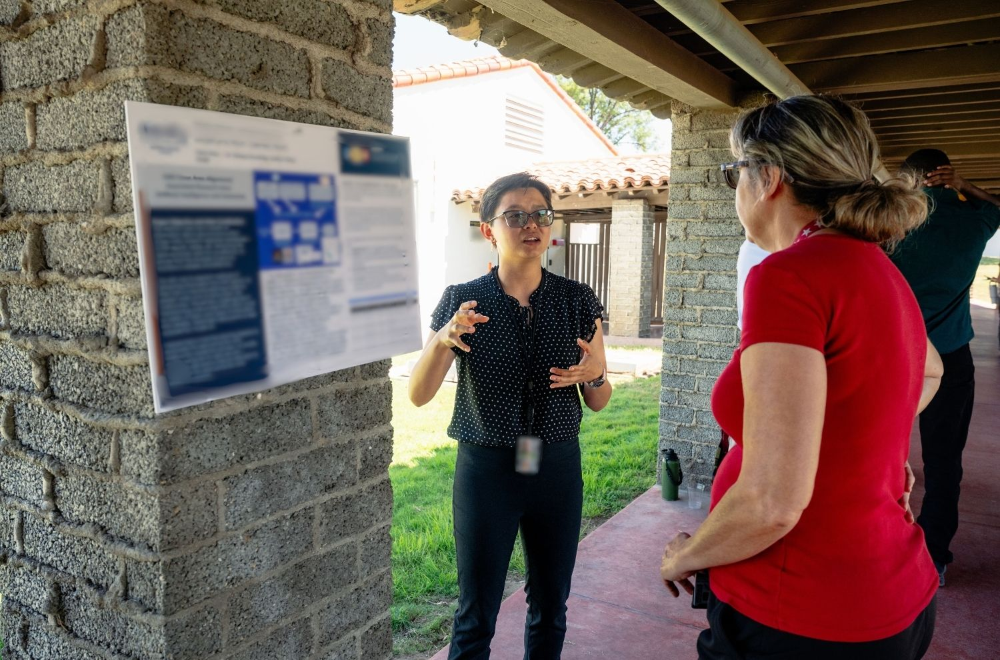

NREIP Internship
Naval Research Enterprise Internship Program
This summer I had the opportunity to intern at both a software engineering lab (6 weeks) and a rapid prototyping lab (4 weeks). The below projects detail my primary work from the internship, on 2 separate project sprints.
Air-Gapped Desktop Video Annotation Application
I built an offline desktop app that turns multi-hour video into a training-ready dataset. Model-assisted pre-labeling speeds up annotation. Every image and label traces back to its source video and frame. Labeling now runs about 3x faster.
Ingestion Pipeline for Unstructured PDFs
I scoped a 3 stage plan (ingestion, extraction, prediction) to automate numerical estimates from several hundred inconsistently formatted failure reports. In a 3 week sprint, I built the ingestion stage with Docling, converting PDFs into structured Markdown with tables and layout intact.
Note: I was honored to place 3rd of 30 interns for the final technical presentation to base leadership!